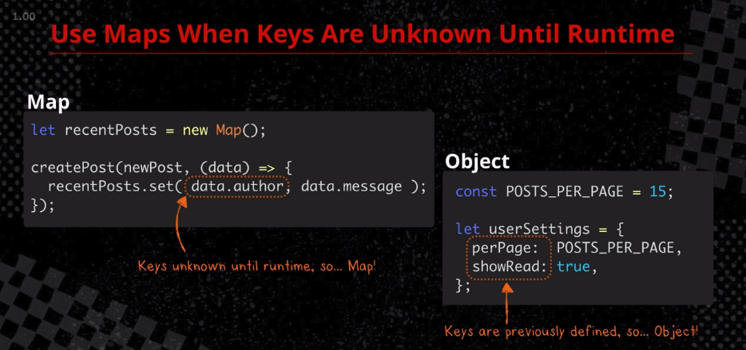
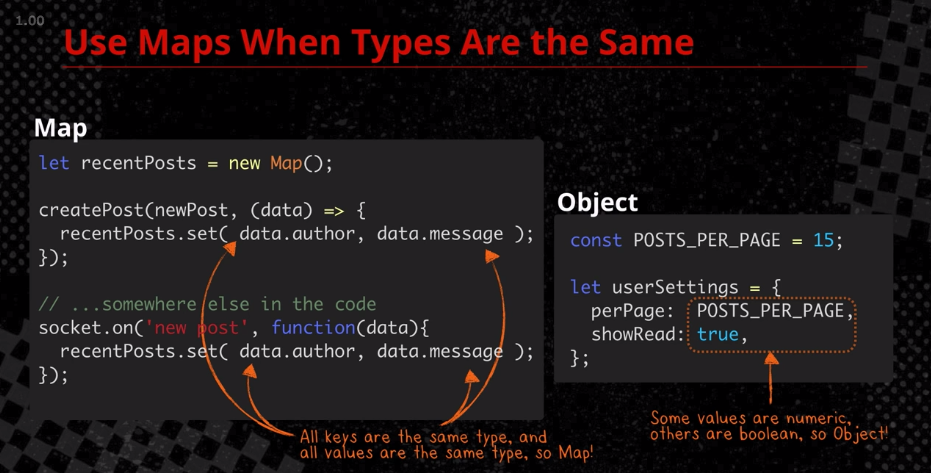
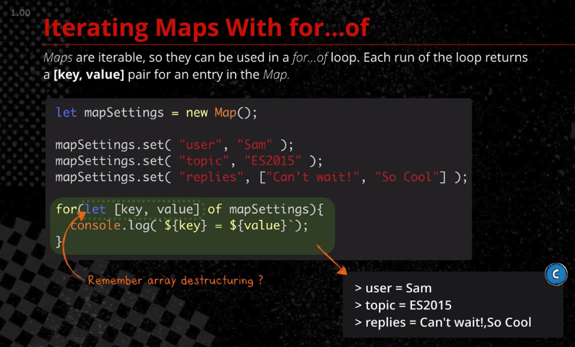

本文為 ES2015: The Shape of JavaScript to Come（CodeSchool）線上課程筆記
本文目錄：
使用 object 作為 map 的壞處：
key 會自動轉為字串（只能用字串當 key）
let user1 = { name: Sam }
let user2 = { name: Tyler }
let totalReplies ={}
totalReplies[user1] = 5
totalReplies[user2] = 42
let user1 = { name: Sam }
let user2 = { name: Tyler }
let totalReplies = new Map();
totalReplies.set( user1, 5 )
totalReplies.set( user2, 42 )
設值： object.set(key, value) =>
取值： object.get(key) => return value
使用map的時機：
Use maps when key are unknown until runtime
Since keys like perPage and canSort are previously defined, we don't run the risk of accidentally overwriting values.

when all keys are the same type and all values are the same type

maps are iterable （可以用 fro...of）
each run of the loops returns a [key, value] pair for an entry in the map

Weakmap
A type of Map where only objects can be passed as keys. Primitive data types (such as strings, numbers, booleans, etc) are not allowed.